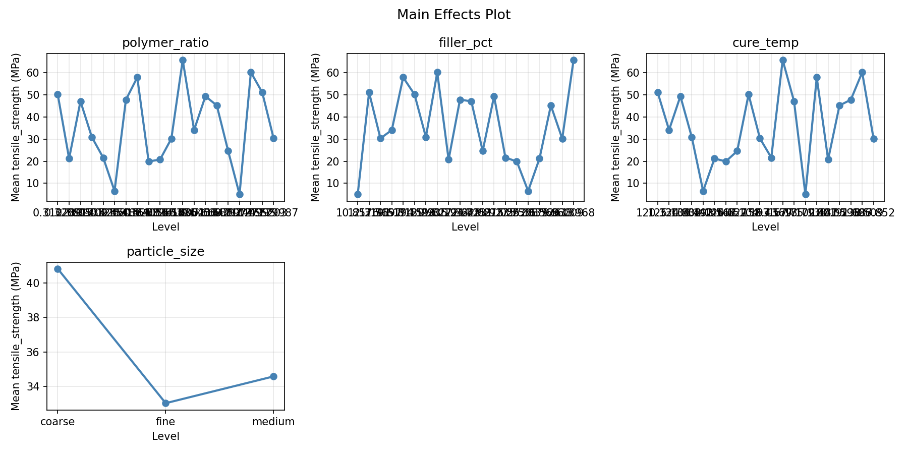
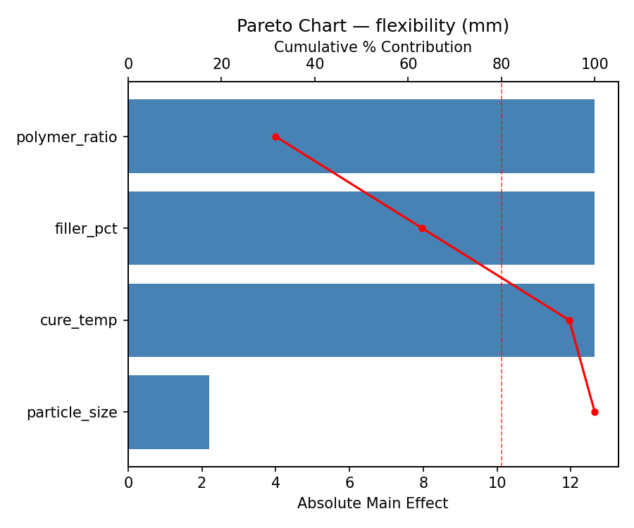
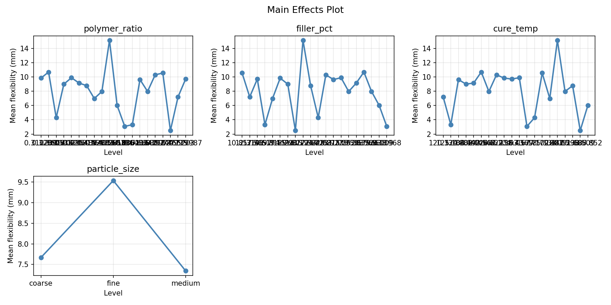
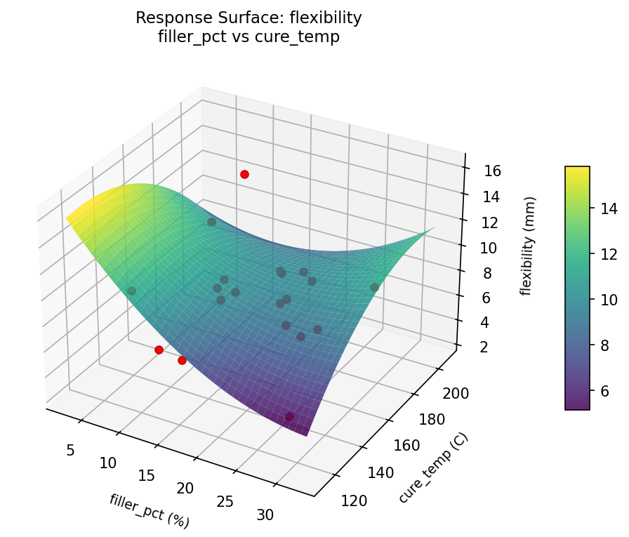
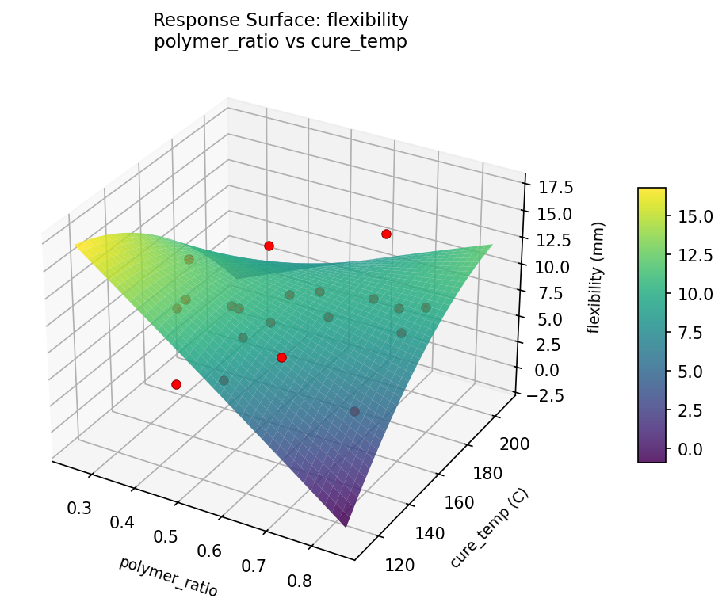
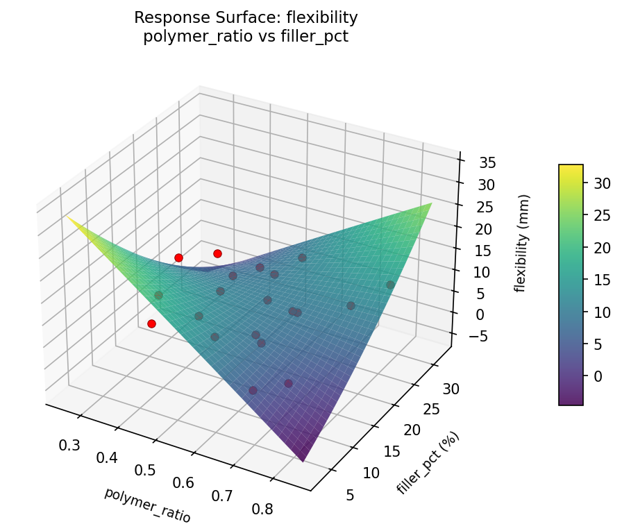
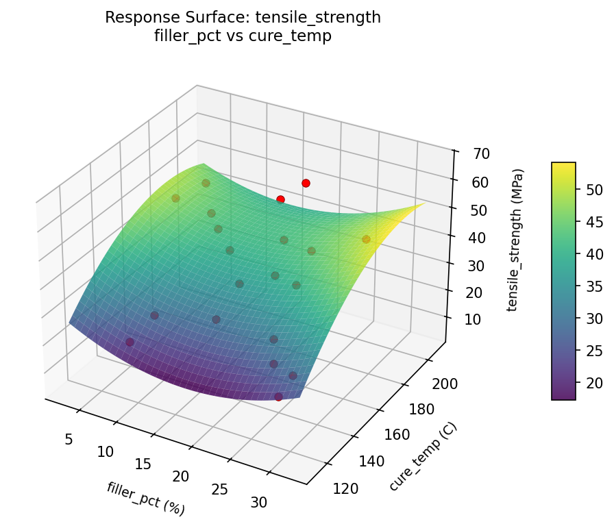
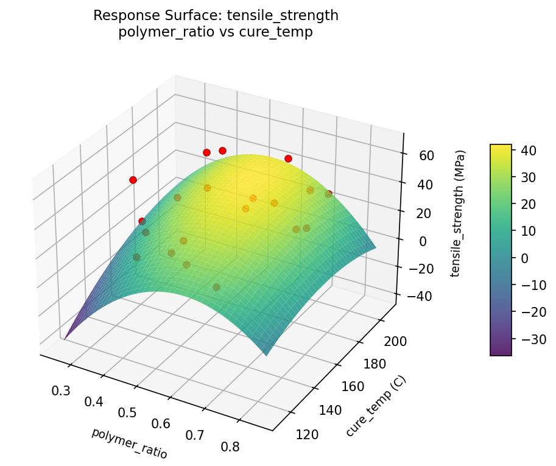
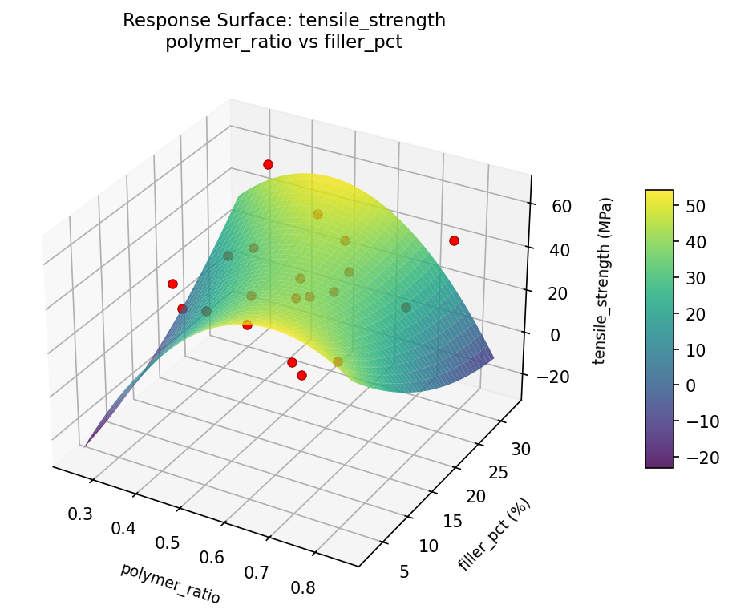

Summary
This experiment investigates composite material formulation. Latin Hypercube sampling to explore a 4-factor material design space.
The design varies 4 factors: polymer ratio, ranging from 0.3 to 0.8, filler pct (%), ranging from 5 to 30, cure temp (C), ranging from 120 to 200, and particle size, ranging from fine to coarse. The goal is to optimize 2 responses: tensile strength (MPa) (maximize) and flexibility (mm) (maximize). Fixed conditions held constant across all runs include cure time min = 45, ambient humidity = 50.
Latin Hypercube Sampling was used to space 20 runs across the 4-dimensional factor space with good coverage and minimal gaps, making it ideal for computer experiments where the response surface may be complex.
Quadratic response surface models were fitted to capture potential curvature and factor interactions. The RSM contour plots below visualize how pairs of factors jointly affect each response.
Key Findings
For tensile strength, the most influential factors were polymer ratio (31.2%), filler pct (31.2%), cure temp (31.2%). The best observed value was 65.8 (at polymer ratio = 0.649019, filler pct = 23.4517, cure temp = 161.415).
For flexibility, the most influential factors were polymer ratio (32.4%), filler pct (32.4%), cure temp (32.4%). The best observed value was 15.14 (at polymer ratio = 0.68873, filler pct = 26.3712, cure temp = 177.677).
Recommended Next Steps
- Consider whether any fixed factors should be varied in a future study.
The Scenario
You are developing a new composite material and need to explore a large, continuous design space. With 4 factors (3 continuous + 1 ordinal), you want good coverage without testing every combination. Latin Hypercube Sampling gives you space-filling coverage that captures the full range of each factor.
ℹ
Why Latin Hypercube?
Continuous factors need interpolation, not just high/low. LHS divides each factor's range into N equal intervals and places exactly one sample in each interval — like placing non-attacking rooks on a chessboard. The maximin criterion ensures no clustering. With lhs_samples: 20, you get double the default coverage.
Experimental Setup
Factors
| Factor | Range / Levels | Type | Unit |
|---|
polymer_ratio | 0.3 – 0.8 | continuous | — |
filler_pct | 5 – 30 | continuous | % |
cure_temp | 120 – 200 | continuous | °C |
particle_size | fine, medium, coarse | ordinal | — |
Fixed: cure_time = 45 min, ambient_humidity = 50%
Responses
| Response | Direction | Unit |
|---|
tensile_strength | ↑ maximize | MPa |
flexibility | ↑ maximize | mm |
Experimental Matrix
The Latin Hypercube Design produces 20 runs. Each row is one experiment with specific factor settings.
| Run | polymer_ratio | filler_pct | cure_temp | particle_size |
|---|
| 1 | 0.680159 | 9.71441 | 172.906 | medium |
| 2 | 0.535633 | 10.5685 | 170.123 | fine |
| 3 | 0.77239 | 16.1105 | 198.218 | medium |
| 4 | 0.361009 | 29.2329 | 165.299 | medium |
| 5 | 0.383882 | 18.4761 | 162.496 | coarse |
| 6 | 0.304233 | 20.2055 | 157.995 | fine |
| 7 | 0.400489 | 21.5798 | 178.331 | medium |
| 8 | 0.328442 | 7.47258 | 123.837 | medium |
| 9 | 0.504966 | 6.02909 | 151.892 | fine |
| 10 | 0.427691 | 24.6486 | 135.653 | fine |
| 11 | 0.729745 | 19.6025 | 147.24 | medium |
| 12 | 0.490928 | 27.5162 | 192.248 | fine |
| 13 | 0.705107 | 27.3736 | 154.57 | medium |
| 14 | 0.646945 | 14.9186 | 185.024 | fine |
| 15 | 0.571726 | 25.6136 | 140.066 | coarse |
| 16 | 0.666375 | 13.0603 | 126.044 | coarse |
| 17 | 0.467637 | 23.0866 | 138.855 | coarse |
| 18 | 0.784433 | 12.3016 | 128.93 | coarse |
| 19 | 0.586879 | 8.50811 | 181.255 | coarse |
| 20 | 0.619554 | 16.2523 | 191.093 | coarse |
Step-by-Step Workflow
$ python doe.py info --config use_cases/05_material_formulation/config.json
$ python doe.py generate --config use_cases/05_material_formulation/config.json \
--output results/run.sh --seed 99
$ bash results/run.sh
$ python doe.py analyze --config use_cases/05_material_formulation/config.json \
--results-dir use_cases/05_material_formulation/results
$ python doe.py optimize --config use_cases/05_material_formulation/config.json
$ python doe.py report --config use_cases/05_material_formulation/config.json \
--output results/report.html
Real-World Lab Workflow
ℹ
Physical Material Testing? Use the Manual Workflow
Composite material formulation is inherently physical — you mix resins, prepare specimens, cure them, and run tensile tests on a universal testing machine. The simulation script above is for demonstration. In practice, use record, status, and export-worksheet for your real experiments.
Material testing typically spans days (due to curing times) and involves expensive specimens. Here's the practical workflow:
$ python doe.py export-worksheet --config use_cases/05_material_formulation/config.json \
--format csv --output formulation_worksheet.csv
$ python doe.py status --config use_cases/05_material_formulation/config.json
$ python doe.py record --config use_cases/05_material_formulation/config.json --run 1
$ python doe.py analyze --config use_cases/05_material_formulation/config.json --partial
$ python doe.py analyze --config use_cases/05_material_formulation/config.json
$ python doe.py optimize --config use_cases/05_material_formulation/config.json
$ python doe.py report --config use_cases/05_material_formulation/config.json \
--output formulation_report.html
✔
Ideal for Expensive Experiments
Material specimens can be costly and slow to prepare. The --partial flag lets you analyze intermediate results — if one factor clearly dominates after half the specimens, you can make informed decisions about whether to continue, adjust, or pivot the study before committing more materials.
Interpreting the Results
Continuous Factor Coverage
Unlike 2-level designs where each factor takes only "low" or "high," LHS produces unique values across the entire range. This enables:
- Detecting non-linear effects (e.g., cure_temp has a quadratic effect on tensile strength)
- Building regression models with better interpolation
- Identifying narrow optimal regions within the factor space
Ordinal Factor Handling
The ordinal factor particle_size is binned into its 3 levels (fine, medium, coarse). About 1/3 of the 20 runs use each level, spread across the LHS sample.
Next Steps
- Identify the most promising region from LHS results
- Narrow the factor ranges around that region
- Run a Box-Behnken or CCD for precise optimization
Features Exercised
| Feature | Value |
|---|
| Design type | latin_hypercube |
| Factor types | continuous (3) + ordinal (1, 3 levels) |
lhs_samples | 20 (custom, overrides default of 10) |
--results-dir | Override at analysis time |
--seed | 99 (controls numpy RNG for LHS) |
| Multi-response | tensile_strength ↑, flexibility ↑ |
Analysis Results
Generated from actual experiment runs using the DOE Helper Tool.
Response: tensile_strength
The Pareto chart reveals which formulation components most strongly affect tensile strength.
Pareto Chart

Main Effects Plot

Response: flexibility
Flexibility is driven by a different balance of formulation factors, requiring trade-off analysis with tensile strength.
Pareto Chart

Main Effects Plot

Response Surface Plots
3D surfaces fitted with quadratic RSM. Red dots are observed data points.
📊
How to Read These Surfaces
Each plot shows predicted response (vertical axis) across two factors while other factors are held at center. Red dots are actual experimental observations.
- Flat surface — these two factors have little effect on the response.
- Tilted plane — strong linear effect; moving along one axis consistently changes the response.
- Curved/domed surface — quadratic curvature; there is an optimum somewhere in the middle.
- Saddle shape — significant interaction; the best setting of one factor depends on the other.
- Red dots far from surface — poor model fit in that region; be cautious about predictions there.
tensile_strength (MPa) — R² = 0.905, Adj R² = 0.639
The model fits well — the surface shape is reliable.
Curvature detected in cure_temp, filler_pct — look for a peak or valley in the surface.
Strongest linear driver: filler_pct (increases tensile_strength).
Notable interaction: filler_pct × particle_size — the effect of one depends on the level of the other. Look for a twisted surface.
flexibility (mm) — R² = 0.626, Adj R² = -0.419
Moderate fit — surface shows general trends but some noise remains.
Curvature detected in polymer_ratio, cure_temp — look for a peak or valley in the surface.
Strongest linear driver: polymer_ratio (decreases flexibility).
Notable interaction: filler_pct × cure_temp — the effect of one depends on the level of the other. Look for a twisted surface.
flexibility: filler pct vs cure temp

flexibility: polymer ratio vs cure temp

flexibility: polymer ratio vs filler pct

tensile: strength filler pct vs cure temp

tensile: strength polymer ratio vs cure temp

tensile: strength polymer ratio vs filler pct

Full Analysis Output
=== Main Effects: tensile_strength ===
Factor Effect Std Error % Contribution
--------------------------------------------------------------
polymer_ratio 60.8000 3.9357 29.9%
filler_pct 60.8000 3.9357 29.9%
cure_temp 60.8000 3.9357 29.9%
particle_size 20.7429 3.9357 10.2%
=== Summary Statistics: tensile_strength ===
polymer_ratio:
Level N Mean Std Min Max
------------------------------------------------------------
0.30645 1 60.2000 0.0000 60.2000 60.2000
0.345057 1 57.9000 0.0000 57.9000 57.9000
0.364969 1 49.4000 0.0000 49.4000 49.4000
0.398627 1 30.2000 0.0000 30.2000 30.2000
0.412433 1 51.1000 0.0000 51.1000 51.1000
0.435932 1 20.7000 0.0000 20.7000 20.7000
0.457029 1 6.5000 0.0000 6.5000 6.5000
0.477081 1 5.0000 0.0000 5.0000 5.0000
0.500259 1 30.9000 0.0000 30.9000 30.9000
0.549414 1 21.2000 0.0000 21.2000 21.2000
0.565524 1 19.9000 0.0000 19.9000 19.9000
0.59909 1 65.8000 0.0000 65.8000 65.8000
0.608945 1 34.1000 0.0000 34.1000 34.1000
0.627461 1 24.6000 0.0000 24.6000 24.6000
0.661973 1 47.8000 0.0000 47.8000 47.8000
0.696713 1 47.1000 0.0000 47.1000 47.1000
0.716097 1 21.6000 0.0000 21.6000 21.6000
0.741222 1 50.2000 0.0000 50.2000 50.2000
0.758732 1 45.2000 0.0000 45.2000 45.2000
0.793704 1 30.3000 0.0000 30.3000 30.3000
filler_pct:
Level N Mean Std Min Max
------------------------------------------------------------
11.0774 1 47.1000 0.0000 47.1000 47.1000
11.7086 1 30.3000 0.0000 30.3000 30.3000
12.6117 1 21.2000 0.0000 21.2000 21.2000
14.4259 1 60.2000 0.0000 60.2000 60.2000
16.1864 1 21.6000 0.0000 21.6000 21.6000
17.1696 1 20.7000 0.0000 20.7000 20.7000
17.9415 1 24.6000 0.0000 24.6000 24.6000
19.0991 1 50.2000 0.0000 50.2000 50.2000
20.7811 1 65.8000 0.0000 65.8000 65.8000
21.4972 1 34.1000 0.0000 34.1000 34.1000
22.7419 1 47.8000 0.0000 47.8000 47.8000
23.9832 1 45.2000 0.0000 45.2000 45.2000
25.2071 1 30.9000 0.0000 30.9000 30.9000
27.4195 1 57.9000 0.0000 57.9000 57.9000
28.1025 1 6.5000 0.0000 6.5000 6.5000
29.6222 1 51.1000 0.0000 51.1000 51.1000
5.48476 1 30.2000 0.0000 30.2000 30.2000
6.96658 1 5.0000 0.0000 5.0000 5.0000
7.55985 1 19.9000 0.0000 19.9000 19.9000
9.99025 1 49.4000 0.0000 49.4000 49.4000
cure_temp:
Level N Mean Std Min Max
------------------------------------------------------------
121.363 1 20.7000 0.0000 20.7000 20.7000
125.967 1 47.1000 0.0000 47.1000 47.1000
128.352 1 30.9000 0.0000 30.9000 30.9000
134.74 1 6.5000 0.0000 6.5000 6.5000
138.442 1 47.8000 0.0000 47.8000 47.8000
140.466 1 49.4000 0.0000 49.4000 49.4000
145.706 1 24.6000 0.0000 24.6000 24.6000
148.101 1 5.0000 0.0000 5.0000 5.0000
154.254 1 34.1000 0.0000 34.1000 34.1000
157.829 1 21.2000 0.0000 21.2000 21.2000
163.748 1 30.2000 0.0000 30.2000 30.2000
167.685 1 60.2000 0.0000 60.2000 60.2000
170.313 1 65.8000 0.0000 65.8000 65.8000
172.847 1 45.2000 0.0000 45.2000 45.2000
177.763 1 57.9000 0.0000 57.9000 57.9000
181.397 1 51.1000 0.0000 51.1000 51.1000
185.257 1 21.6000 0.0000 21.6000 21.6000
189.124 1 19.9000 0.0000 19.9000 19.9000
192.231 1 50.2000 0.0000 50.2000 50.2000
199.953 1 30.3000 0.0000 30.3000 30.3000
particle_size:
Level N Mean Std Min Max
------------------------------------------------------------
coarse 7 43.4429 7.9227 30.3000 50.2000
fine 6 42.7833 20.7670 20.7000 65.8000
medium 7 22.7000 15.5521 5.0000 51.1000
=== Main Effects: flexibility ===
Factor Effect Std Error % Contribution
--------------------------------------------------------------
polymer_ratio 12.6500 0.6906 32.4%
filler_pct 12.6500 0.6906 32.4%
cure_temp 12.6500 0.6906 32.4%
particle_size 1.0757 0.6906 2.8%
=== Summary Statistics: flexibility ===
polymer_ratio:
Level N Mean Std Min Max
------------------------------------------------------------
0.30645 1 2.4900 0.0000 2.4900 2.4900
0.345057 1 6.9800 0.0000 6.9800 6.9800
0.364969 1 9.6400 0.0000 9.6400 9.6400
0.398627 1 6.0200 0.0000 6.0200 6.0200
0.412433 1 7.2000 0.0000 7.2000 7.2000
0.435932 1 15.1400 0.0000 15.1400 15.1400
0.457029 1 9.1500 0.0000 9.1500 9.1500
0.477081 1 10.5500 0.0000 10.5500 10.5500
0.500259 1 8.9900 0.0000 8.9900 8.9900
0.549414 1 10.6900 0.0000 10.6900 10.6900
0.565524 1 7.9600 0.0000 7.9600 7.9600
0.59909 1 3.0800 0.0000 3.0800 3.0800
0.608945 1 3.3100 0.0000 3.3100 3.3100
0.627461 1 10.3000 0.0000 10.3000 10.3000
0.661973 1 8.7800 0.0000 8.7800 8.7800
0.696713 1 4.2900 0.0000 4.2900 4.2900
0.716097 1 9.8900 0.0000 9.8900 9.8900
0.741222 1 9.8400 0.0000 9.8400 9.8400
0.758732 1 7.9700 0.0000 7.9700 7.9700
0.793704 1 9.7100 0.0000 9.7100 9.7100
filler_pct:
Level N Mean Std Min Max
------------------------------------------------------------
11.0774 1 4.2900 0.0000 4.2900 4.2900
11.7086 1 9.7100 0.0000 9.7100 9.7100
12.6117 1 10.6900 0.0000 10.6900 10.6900
14.4259 1 2.4900 0.0000 2.4900 2.4900
16.1864 1 9.8900 0.0000 9.8900 9.8900
17.1696 1 15.1400 0.0000 15.1400 15.1400
17.9415 1 10.3000 0.0000 10.3000 10.3000
19.0991 1 9.8400 0.0000 9.8400 9.8400
20.7811 1 3.0800 0.0000 3.0800 3.0800
21.4972 1 3.3100 0.0000 3.3100 3.3100
22.7419 1 8.7800 0.0000 8.7800 8.7800
23.9832 1 7.9700 0.0000 7.9700 7.9700
25.2071 1 8.9900 0.0000 8.9900 8.9900
27.4195 1 6.9800 0.0000 6.9800 6.9800
28.1025 1 9.1500 0.0000 9.1500 9.1500
29.6222 1 7.2000 0.0000 7.2000 7.2000
5.48476 1 6.0200 0.0000 6.0200 6.0200
6.96658 1 10.5500 0.0000 10.5500 10.5500
7.55985 1 7.9600 0.0000 7.9600 7.9600
9.99025 1 9.6400 0.0000 9.6400 9.6400
cure_temp:
Level N Mean Std Min Max
------------------------------------------------------------
121.363 1 15.1400 0.0000 15.1400 15.1400
125.967 1 4.2900 0.0000 4.2900 4.2900
128.352 1 8.9900 0.0000 8.9900 8.9900
134.74 1 9.1500 0.0000 9.1500 9.1500
138.442 1 8.7800 0.0000 8.7800 8.7800
140.466 1 9.6400 0.0000 9.6400 9.6400
145.706 1 10.3000 0.0000 10.3000 10.3000
148.101 1 10.5500 0.0000 10.5500 10.5500
154.254 1 3.3100 0.0000 3.3100 3.3100
157.829 1 10.6900 0.0000 10.6900 10.6900
163.748 1 6.0200 0.0000 6.0200 6.0200
167.685 1 2.4900 0.0000 2.4900 2.4900
170.313 1 3.0800 0.0000 3.0800 3.0800
172.847 1 7.9700 0.0000 7.9700 7.9700
177.763 1 6.9800 0.0000 6.9800 6.9800
181.397 1 7.2000 0.0000 7.2000 7.2000
185.257 1 9.8900 0.0000 9.8900 9.8900
189.124 1 7.9600 0.0000 7.9600 7.9600
192.231 1 9.8400 0.0000 9.8400 9.8400
199.953 1 9.7100 0.0000 9.7100 9.7100
particle_size:
Level N Mean Std Min Max
------------------------------------------------------------
coarse 7 7.6486 2.7235 3.3100 9.8400
fine 6 7.8950 4.7903 2.4900 15.1400
medium 7 8.7243 1.7116 6.0200 10.5500
Optimization Recommendations
=== Optimization: tensile_strength ===
Direction: maximize
Best observed run: #12
polymer_ratio = 0.734037
filler_pct = 12.1712
cure_temp = 135.352
particle_size = coarse
Value: 65.8
RSM Model (linear, R² = 0.14):
Coefficients:
intercept: +36.0046
polymer_ratio: +5.2791
filler_pct: -8.0744
cure_temp: -1.3667
particle_size: +1.6144
Predicted optimum:
polymer_ratio = 0.799682
filler_pct = 6.98001
cure_temp = 193.433
particle_size = medium
Predicted value: 48.5444
Factor importance:
1. polymer_ratio (effect: 60.8, contribution: 32.4%)
2. filler_pct (effect: 60.8, contribution: 32.4%)
3. cure_temp (effect: 60.8, contribution: 32.4%)
4. particle_size (effect: 5.5, contribution: 2.9%)
=== Optimization: flexibility ===
Direction: maximize
Best observed run: #7
polymer_ratio = 0.595795
filler_pct = 17.5526
cure_temp = 198.806
particle_size = medium
Value: 15.14
RSM Model (linear, R² = 0.24):
Coefficients:
intercept: +8.0600
polymer_ratio: -0.7442
filler_pct: +0.9248
cure_temp: +1.9985
particle_size: -0.6976
Predicted optimum:
polymer_ratio = 0.483128
filler_pct = 21.5583
cure_temp = 186.217
particle_size = coarse
Predicted value: 10.5668
Factor importance:
1. polymer_ratio (effect: 12.7, contribution: 32.1%)
2. filler_pct (effect: 12.7, contribution: 32.1%)
3. cure_temp (effect: 12.7, contribution: 32.1%)
4. particle_size (effect: 1.5, contribution: 3.8%)
Multi-Objective Optimization
When responses compete, Derringer–Suich desirability finds the best compromise.
Each response is scaled to a 0–1 desirability, then combined via a weighted geometric mean.
Overall Desirability
D = 0.7447
Per-Response Desirability
| Response | Weight | Desirability | Predicted | Dir |
|---|
tensile_strength |
1.5 |
|
68.24 0.9911 68.24 MPa |
↑ |
flexibility |
1.5 |
|
9.64 0.5595 9.64 mm |
↑ |
Recommended Settings
| Factor | Value |
|---|
polymer_ratio | 0.3265 |
filler_pct | 21.66 % |
cure_temp | 196.9 C |
particle_size | medium |
Source: from RSM model prediction
Trade-off Summary
Sacrifice = how much worse than single-objective best.
| Response | Predicted | Best Observed | Sacrifice |
|---|
flexibility | 9.64 | 15.14 | +5.50 |
Top 3 Runs by Desirability
| Run | D | Factor Settings |
|---|
| #3 | 0.6299 | polymer_ratio=0.582002, filler_pct=15.0652, cure_temp=158.786, particle_size=fine |
| #17 | 0.5839 | polymer_ratio=0.374175, filler_pct=20.9833, cure_temp=183.577, particle_size=medium |
Model Quality
| Response | R² | Type |
|---|
flexibility | 0.0839 | linear |
Full Multi-Objective Output
============================================================
MULTI-OBJECTIVE OPTIMIZATION
Method: Derringer-Suich Desirability Function
============================================================
Overall desirability: D = 0.7447
Response Weight Desirability Predicted Direction
---------------------------------------------------------------------
tensile_strength 1.5 0.9911 68.24 MPa ↑
flexibility 1.5 0.5595 9.64 mm ↑
Recommended settings:
polymer_ratio = 0.3265
filler_pct = 21.66 %
cure_temp = 196.9 C
particle_size = medium
(from RSM model prediction)
Trade-off summary:
tensile_strength: 68.24 (best observed: 65.80, sacrifice: -2.44)
flexibility: 9.64 (best observed: 15.14, sacrifice: +5.50)
Model quality:
tensile_strength: R² = 0.7295 (quadratic)
flexibility: R² = 0.0839 (linear)
Top 3 observed runs by overall desirability:
1. Run #2 (D=0.6433): polymer_ratio=0.572404, filler_pct=27.0008, cure_temp=138.854, particle_size=fine
2. Run #3 (D=0.6299): polymer_ratio=0.582002, filler_pct=15.0652, cure_temp=158.786, particle_size=fine
3. Run #17 (D=0.5839): polymer_ratio=0.374175, filler_pct=20.9833, cure_temp=183.577, particle_size=medium